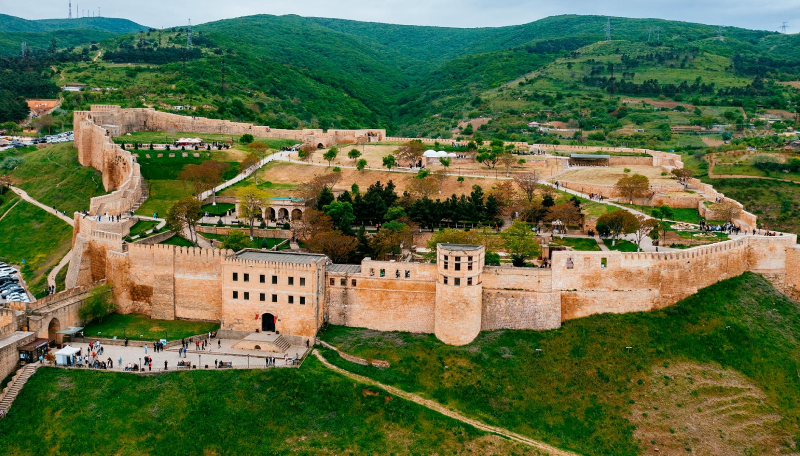
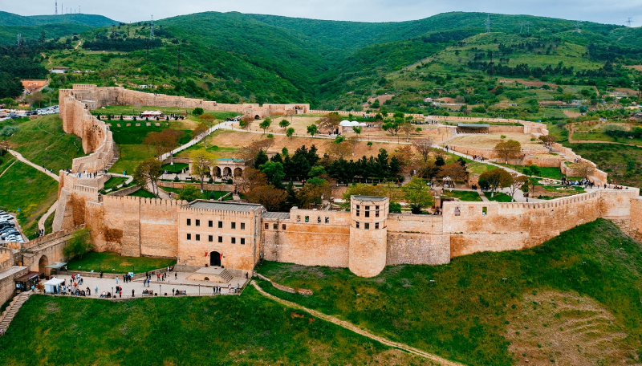

Jokis
Дербент
что и где?

Jokis
Дербент
что и где?
 

КАК ПОЯВИЛСЯ?
Город Дербент основан в 438 году персидской династией Сасанидов, превративших в V-VI веках Дербент в настоящую каменную крепость. Шах Кавад (486-531 гг.) закладывает здесь каменную крепость, а его сын Хосров I Ануширван (531-579 гг.) в 562-571 гг.перегораживает проход между морем и горами 40-километровой крепостной стеной, возводит мощную цитадель Нарын-Кала и сооружает порт.
ИНТЕРЕСНЫЕ ФАКТЫ

1.
Древнейший город - Дербент считается одним из самых древних городов России и мира. Его история насчитывает более 5000 лет, и он был важным торговым и культурным центром на протяжении веков.
2.
Крепость Нарын-Кала - Одна из старейших крепостей в мире — Нарын-Кала, которая была построена в V веке н.э. Эта крепость является наследия ЮНЕСКО и служила стратегическим оборонительным сооружением.
3.
Город Дербент - располагается ниже Мирового океана на 19 метров. Географический факт: для сравнения — самый низко расположенный город в мире Эйн-Бокек на 404 метра ниже уровня Мирового океана.